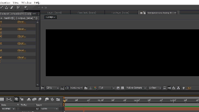

套用在文字圖層上，會自動換行、捲動的打字效果

使用方法
1.放置於以下資料夾後重啟AE：[AE安裝資料夾]\Support Files\Presets\
2.於AE新增文字圖層並打（複製）上大量文字（含換行）
3.從 Effects & Presets 面板選擇 Terminal Effect並套用至該文字圖層
參數說明
CurrentLine→目前最末行所顯示的行數（小數點表示該行文字還沒完整出現）
ShowingLine→總共可以顯示幾行（小數點會被捨去）
TypeOnEffect→打勾會有打字的效果，沒勾就是一般的換行
FirstLineAsCursor→會使用這個文字的「第一行」作為打字時閃動的游標，勾選後第一行會被當作游標使用而不會算在文字中
CursorOnWhenTyping→勾選後打字時（調整CurrentLine時）游標會持續顯示不會閃動
CursorFlickerFreq→游標閃動的頻率（每秒閃幾次）